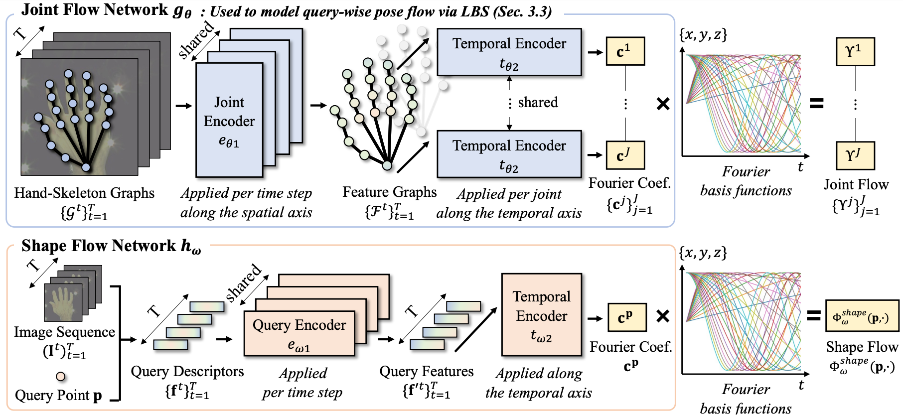

Recent 4D shape representations model continuous temporal evolution of implicit shapes by (1) learning query flows without leveraging shape and articulation priors or (2) decoding shape occupancies separately for each time value. Thus, they do not effectively capture implicit correspondences between articulated shapes or regularize jittery temporal deformations. In this work, we present FourierHandFlow, which is a spatio-temporally continuous representation for human hands that combines a 3D occupancy field with articulation-aware query flows represented as Fourier series. Given an input RGB sequence, we aim to learn a fixed number of Fourier coefficients for each query flow to guarantee smooth and continuous temporal shape dynamics. To effectively model spatio-temporal deformations of articulated hands, we compose our 4D representation based on two types of Fourier query flow: (1) pose flow that models query dynamics influenced by hand articulation changes via implicit linear blend skinning and (2) shape flow that models query-wise displacement flow. In the experiments, our method achieves state-of-the-art results on video-based 4D reconstruction while being computationally more efficient than the existing 3D/4D implicit shape representations. We additionally show our results on motion inter- and extrapolation and texture transfer using the learned correspondences of implicit shapes. To the best of our knowledge, FourierHandFlow is the first neural 4D continuous hand representation learned from RGB videos.
FourierHandFlow achieves the ✨state-of-the-art hand reconstruction accuracy✨ on 30FPS version of InterHand2.6M. It produces plausible hand shapes that are well-aligned to the input RGB observations. Please also refer to the paper for quantitative comparisons with more baseline methods.
FourierHandFlow accurately captures ✨implicit shape correspondences✨ between hands, which naturally allows applications such as texture transfer. Given the reference texture defined in our canonical hand field, it achieves high-quality texture transfer on the randomly sampled sequences.
FourierHandFlow is the ✨spatio-temporally continuous hand representation✨. Given RGB frames observed at each time step, it inherently allows the sampling of hand shapes at inter- and extrapolated time values from the learned Fourier query flows. The sampled shapes are shown to model smooth temporal evolution of hand shapes.
FourierHandFlow parameterizes query flows (i.e., query trajectories over time) using a fixed number of coefficients of Fourier Series. Thus, it can preserve temporal shape continuity while being more ✨computationally efficient✨ than the exiting 4D continuous representations based on ODE solving or per-time occupancy decoding.
FourierHandFlow models a query flow by estimating the joint flow (blue upper branch) and the shape flow (pink lower branch). The joint flow network first predicts the Fourier coefficients for the flow of hand joint positions. The predicted joint flow is propagated to each query point via implicit linear blend skinning. The shape flow network then predicts the Fourier coefficients for query-wise displacement flow w.r.t. the estimated pose-depenedent flow. Please check the paper for more details.
@inproceedings{lee2023fourierhandflow,
title={FourierHandFlow: Neural 4D Hand Representation Using Fourier Query Flow},
author={Lee, Jihyun and Jang, Junbong and Kim, Donghwan and Sung, Minhyuk and Kim, Tae-Kyun},
booktitle={NeurIPS},
year={2023}
}